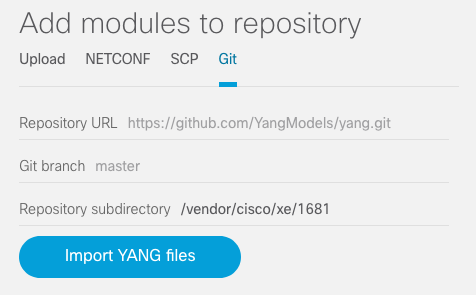

Importing YANG modules from a Git repository to a YANG repository¶
If the YANG modules you wish to use or explore are stored in a Git repository (such as this one), you can instruct YANG Suite to import them directly from the Git repository.
On the “Setup → YANG files and repositories” page, after selecting the desired repository, in the “Add modules to repository” section, select the “Git” tab.
Enter the repository URL, branch (if not the default of “master”), and, if the modules are in a subdirectory within the repository, the relative path to said subdirectory.
Select “Import YANG files”.
You will see a progress bar animating while the Git repository is cloned and the files are imported into YANG suite. When complete, a pop-up dialog will summarize the results.

You can now continue as described at Constructing and populating a YANG module repository.